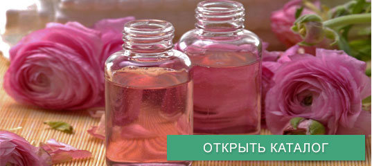

Сегодня цветочную воду воспринимают как устаревшее средство по уходу за своим телом, однако, не так давно она ею пользовались многие представительницы слабого пола. Очень жаль, ведь данное увлажняющее и ароматное средство по уходу за телом является ценным средством, не уступая индивидуальному аромакулону и ароматизации помещения с помощью аромалампы.
В гидролате сохраняются практически все полезные составляющие эфирных масел растений. Перед непосредственным применением аромамасла, его необходимо разбавлять, наносить на чувствительные участки кожи не рекомендуется. Подобных проблем с душистой водой не возникает, ведь она нередко применяется как самостоятельное средство интимной гигиены.
Восхитительно легкий, абсолютно нежирный нежирный и удивительно нежный гидролат является незаменимой основой косметических средств и, к сожалению, недооцененным косметическим средством. Доступность – дополнительное преимущество душистой воды.
